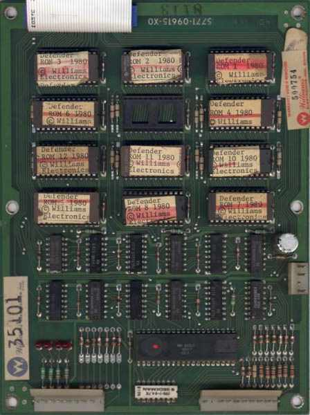
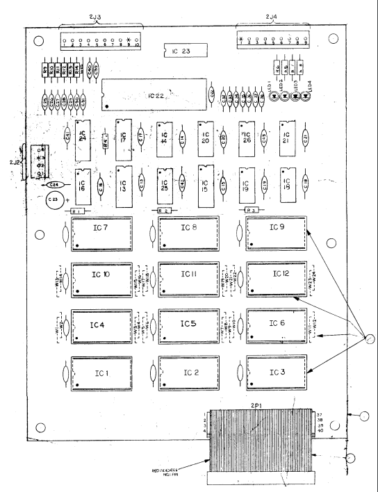

I figured out how to assemble the source code for the Williams arcade game Defender and get to match the 11 rom files that would have been loaded onto the arcade cabinet's ROM board. Today, these rom files can be used to play the game in an emulator such as MAME.
There were four versions of the game released: White Label, Blue Label, Green Label, and Red Label, in that order. Each release was a circuit board with the assembled code split across a number of different ROM chips, also referred to as 'ICs'. This image of the Red Label ROM board from ( Scott Tunstall's site ) gives you an idea of what such a board looks like:
 For more, see my very detailed description of how I go about matching the original ROMs.